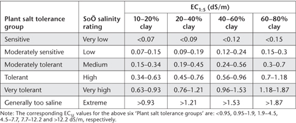

The soil solution plays a major role in the supply of nutrients to plants. It also contributes to the cycling, transformation and transport of nutrients and pollutants in soils and ecosystems (Agbenin 2003). Its key components are soil water and dissolved electrolytes, gases, and water-soluble compounds (Adams 1974). While it is possible to measure all constituents, this is usually impractical. Moreover, the composition of the soil solution is affected by plant nutrient uptake, root exudates, microbiological activity, fertilisation, leaching and other soil properties that vary in space and time.
An indication of the nature and ionic strength of the soil solution can be obtained from the EC of a soil/water suspension. This soil test provides a quick estimate of the concentration of electrically-charged water soluble salts able to enter and persist in the soil solution. These consist predominantly of the cations Ca2+, Mg2+ and Na+ and the anions Cl–, SO42– and HCO3–. Fertilisers and animal manures often contribute other inorganic ions such as K+, NH4+ and NO3-. Soil EC values are unaffected by non-ionic solutes such as sugars, and ions that combine to form neutral ion pairs. The predominant mechanisms causing the accumulation of soluble salts in farmlands are heavy use of fertiliser, and (more commonly) the loss of water through evaporation and evapotranspiration, leaving ever-increasing concentrations of Cl salts in the remaining soil-water.
Visible effects of elevated levels of soluble salts include loss of stand, reduced plant growth, reduced yields, and in severe cases, crop failure and salt crystallization on the soil surface. High soil salinity may also cause specific-ion toxicities or upset the nutritional balance of plants. In addition, the salt composition of the soil-water influences the composition of cations on the exchange complex of soil particles that in turn affect soil permeability and tilth (Corwin and Lesch 2005).
There is no internationally agreed method for measuring EC for routine soil testing purposes, the main variant being the soil/water ratio. Common ratios include 1:1, 1:2.5 and 1:5, in addition to saturation extracts. A 1:5 soil/water ratio (EC1:5) has wide acceptance in Australia, as other determinations such as pH, water-soluble Cl and water-soluble NO3 can be made in the same aqueous extract. The 1:5 soil/water extract represents a dilution above field water content of from five to >40 times, which typically results in an overestimation of salinity when soils are light textured and/or when they contain sparingly soluble salts such as gypsum (Shaw 1988; Tolmie and Biggs 2000).
Based on the interpretative criteria of Bruce and Rayment (1982), most horticultural species, field crops and pastures prefer soils with very low (<0.15 dS/m) to low (0.15–0.45 dS/m) values of EC1:5. In contrast, high (0.90–2.0 dS/m) to very high (>2.0 dS/m) values of EC1:5, which correspond to high concentrations of soluble salt in the soil, reflect soil conditions unfavourable for all except salt-loving plant species. More detailed interpretative criteria that take account of soil clay content are summarised in Table 3.1.
Table 3.1. RelatŠnships (updated by Tolmie and Biggs 2000, from Shaw et al. 1987 and Shaw 1988) involving expected plant salt tolerance, soÕ salinity ratings, soÕ EC1:5 values and soÕ clay percentage.

There is increasing use of in-field EM mapping of ECa. This non-destructive technology indicates a variety of soil profile properties in addition to soil salinity. Included are spatial patterns of leaching fractions, irrigation and drainage patterns, compaction patterns due to farm machinery, etc. It is usual to calibrate EM data with laboratory measured soil EC levels. For example, Lesch et al. (1995) reported a relationship between relative responses of their EMh sensor and average EC1:5 (units of dS/m) of EC1:5 = 0.554 EMh, with EMh values in the range 0–7 and EC1:5 values in the range 0–5.
Four methods are described in this chapter. The first (method 3A1) is for EC1:5, involving use of a conductivity cell and a conductivity meter. The second (3B1) provides an estimate of soluble salts where these are dominated by Cl–. The third (3C1) provides a quick estimate of soil ionic strength. It is based on the linear relationship described by Gillman and Bell (1978). The fourth (3D1) is a field-based method for redox potential. Summary details on each are provided in Table 3.2. Information on accuracy and precision for Method 3A1 is provided in Appendix 2, Table App. 2.1.
This method, updated from Rayment and Higginson (1992), is based on a 1:5 w/v soil/water extract with air-dry (40°C) soil. This soil/water ratio has been widely used in Australia and considerable data have accumulated. While it is realised sparingly soluble salts will contribute to a greater extent at this ratio than at more concentrated ratios, the values of EC are satisfactory for most purposes. When the same suspension is to be used for the determination of Cl– and pH, the EC should be determined first so there is no risk of Cl– contamination from the calomel reference electrode (or similar). Air-dry soil is preferred to oven-dry (105°C) soil, as the latter may convert at least part of any gypsum present to plaster of paris, which has higher water solubility (Rhoades 1982).
If soils contain more than about 1% of gypsum, the soil suspension will approach saturation and have an EC of about 2.2 dS/m. When much gypsum is present it will not be dissolved completely in a 1:5 soil/water suspension. A precise indication of soluble salts, however, loses significance in such soils.
Table 3.2. Summary detaÕs of laboratory and field methods described in this chapter.
Code |
Technology |
Test method |
Notes |
3A1 |
Conductivity cell and conductivity meter in conjunction with a 1:5 soil/water suspension. |
Electrical conductivity (EC) of 1:5 soil/water extract. |
Common, cheap and valuable soil test for all soil types. Method is based on use of air-dry soils. |
3B1 |
Calculation based on EC1:5 (dS/m) × 0.336. |
Estimated soluble salt concentration. |
Best estimates of soluble salts when Cl– are dominant. |
3C1 |
Calculation based on EC1:5 and a relationship published by Gillman and Bell (1978). |
Estimated soil ionic strength. |
Estimates soil ionic strength as mM at 0.1 bar soil moisture. Particularly suited to highly weathered soils. |
3D1 |
In-field measurement of the potential difference between a Pt indicator electrode and a Ag/AgCl reference electrode, both connected to a millivoltmeter. |
Redox potential (Eh; field). |
Not recommended for use on dry soils. Soil Eh values usually vary with depth and have most relevance in sub-soils. |
EC values increase with increasing temperature and must be corrected if not measured at 25°C. An approximate correction can be made by increasing the values by 2% for each degree that the ambient temperature is below 25°C, and decreasing them by a similar percentage when the temperature is above 25°C. The EC1:5 is reported on an air-dry basis because the conversion to an oven-dry basis cannot be readily calculated. See Method 14B1 for the determination of EC/SE.
Deionised Water
The water is to have an EC of <10-4 dS/m, and have a CO2 concentration no more than that in equilibrium with the atmosphere (refer to Note 1).
Acid-Dichromate Cleaning Solution
To 32mL of a saturated water solution of sodium dichromate (Na2Cr2O7) add 1.0 L sulfuric acid (H2SO4; 18 M). Handle with caution and care as this solution is both corrosive and a strong oxidant.
0.01 M Potassium Chloride Reference Solution
Dissolve 0.7455 g potassium chloride (KCl; previously dried at 110°C for 2 h) and make volume to 1.0 L with deionised water that is free of CO2. This solution has an EC of 1.413 dS/m at 25°C.
Prepare a 1:5 w/v soil/water suspension. For example, weigh 20.0 g air-dry soil into a suitable bottle or jar and add 100 mL deionised water. Mechanically shake (end-over-end preferred), at 25°C in a closed system for 1 h to dissolve soluble salts. Allow around 20–30 min minimum for the soil to settle.
Calibrate the conductivity cell and meter in accordance with manufacturer’s instructions, using the KCl reference solution at the temperature of the suspensions.
Dip the conductivity cell into the settled supernatant, moving it up and down slightly without disturbing the settled soil. Take the reading with the cell stationary when the system has stabilized (see Notes 2 and 3). Rinse the EC cell with deionised water between samples and remove excess water. Complete EC measurements within 3–4 h of obtaining the aqueous supernatant. Reference soils should be included in each batch of unknown samples.
Report EC (dS/m) at 25°C on an air-dry (40°C) basis.
1. High quality RODI that contains inconsequential traces of soluble OM is preferred for reagents and standard solutions. This equates to ASTM Type 1 grade of reagent water.
2. If EC readings become erratic, clean the EC electrode by soaking it in Acid-Dichromate Cleaning Solution overnight, followed by thorough rinsing with deionised water. If the platinum black has flaked, recoat according to the procedure outlined in APHA (1998). Rinse electrodes thoroughly and keep immersed in water when not in use.
3. The depth of insertion of the EC electrode should be checked against the 0.01 M KCl Reference Solution to determine locations where no effect on the correct reading occurs. With unshielded electrodes, small containers may be unsuitable for use.
An approximate indication of the concentration of soluble salts in soil can be obtained by calculation from EC1:5. Assumptions include (a) that Cl– dominate the soluble anions in the soil, which is not always the case, and (b) the gram-equivalent weight of the soluble salts is around 51 or greater (Jackson 1958). In addition, the presence of gypsum can upset the relationship with EC1:5, as can the different ionic conductivities of particular soluble salts and the influence of soil surface properties.
Rayment and Higginson (1992) suggested the approximate percentage of TSS could be obtained by multiplying the EC1:5 value by 0.34, which derives from the relationships reported by Jackson (1958) and US Salinity Laboratory Staff (1954), with allowance for a 1:5 soil/water ratio. Earlier, Piper (1944) used a factor of 0.375, derived from actual correlations of specific conductivities (at 20°C) with the amounts of soluble salts determined gravimetrically in a large number of Australian soils.
While the value 0.336 is used in the following calculation, it is noteworthy that more refined estimates are available for particular Australian locations. For example, Williams and Semple (2001) reported the following relationship for saline seepage scalds from Central Western New South Wales, where measured soil salt concentrations ranged from 0.19–1.8%. Specifically, TSS (%) = 0.165 + 0.225*EC1:5, where EC1:5 has units of dS/m. This relationship gives higher values (relative to the calculation provided below) at EC1:5 values around 0.15 dS/m and similar values in the EC1:5 range 0.9–2.0 dS/m.
Soil soluble salts (% air-dry soil) = [EC1:5 (dS/m) × 0.336]
Report approximate soluble salts (% of air-dry soil).
Most chemical soil tests give the total concentrations of all species of a particular ion. The effective concentration is the measured concentration only when there is no ion-pairing, hydrolysis or disassociation. Ultimately, the activities of major ions rather than their concentrations per se drive most chemical processes in the soil solution. As an example, ≈28.3% of the soluble Ca and SO4 in a 10 mM CaSO4 solution are paired as neutral CaSO40, whereas there are 10 mM Ca2+ and 20 mM Cl– in a 10 mM CaCl2 solution (Adams 1974).
Soil solution ionic strength must be known in order to calculate ionic concentrations, ion-pair concentrations and ionic activities. Knowledge of soil ionic strength also assists in the development and choice of methods for assessing the cation and anion exchange capacity of soils, particularly those that are highly weathered. Ionic strength also influences the types of Al species in soil solution and their proportions, which influences whether or not the root environment may be Al toxic.
Gillman and Bell (1978) measured/calculated the ionic strength (I) and other soil solution characteristics of a range of highly weathered soils from North Queensland. They found that I at 0.1 bar soil moisture (across an ionic strength range of zero to 14 mM) was strongly correlated with EC1:5. That relationship provides the basis for this useful soil test.
Soil ionic strength at 0.1 bar (I0.1) = [0.0446*EC1:5 – 0.000173]
where I0.1 has units of mM, and EC1:5 has units of dS/m @ 25°C.
Report estimated soil ionic strength as mM.
Redox potential is an electrical measurement that indicates the oxidation-reduction status of natural and custom-made soils. It is expressed numerically as Eh, with units of mV. Soil Eh is a valuable but difficult-to-measure attribute that helps when assessing soil health and genesis, in addition to providing guidance on soil fertility and the status of soil contaminants (Liu and Yu 1984). Eh reflects the tendency of a soil solution to transfer electrons to or from a reference electrode; i.e. it is a measure of electron pressure/availability in the soil solution (Vorenhout et al. 2004). From this, an estimate of whether the soil (particularly sub-soil) is aerobic, anaerobic, or a mix of the two is obtained. These conditions influence whether chemical compounds such as Fe and Mn are chemically reduced or mostly present in their oxidised forms (Vepraskas and Faulkner 2001; Table 3.3).
Soil redox values are dependent on measurement conditions and other soil properties. Slow electrode response in poorly poised (redox capacity) soils (e.g. Ponnamperuma 1972; Fiedler et al. 2007) is a further challenge. Usually, measurements are made in the field. Here, apparent redox potentials are influenced by drainage, the presence of reactive chemicals, and/or exposure of the soil to atmospheric interactions. Measures of both oxidation and reduction are required in Soil Taxonomy (Soil Survey Staff 1999) for ‘aquic’ conditions, although the duration of reduction is unspecified. Hydric soils are able to support the growth and regeneration of hydrophytic vegetation.
Redox reactions involve the transfer of electrons from reductors (e– donors or reducing agents) to oxidants (e– acceptors or oxidising agents). James and Bartlett (2000) provide many examples.
The capacity factor in redox is referred to as poise (pe) and is defined as the change in added equivalents of reductant or oxidant to bring about a one unit change in pe (or an Eh change of 59 mV). The concept is similar to that of buffer capacity for pH (Stumm and Morgan 1996).
The field method described for quantifying electron activity detects the potential difference between a Pt indicator electrode and a Ag/AgCl reference electrode, both connected to a millivoltmeter (e.g. Jackson 1956; James and Bartlett 2000; Vorenhout et al. 2004). The method assumes the Pt electrode is inert and does not react chemically, while achieving equilibrium with the electro-active species in the soil. Diurnal fluctuations are common and changes in Eh with soil depth are the norm.
Table 3.3. Examples of approximate Eh values for soÕs of different oxidatŠn status and at points of transitŠn for important redox pairs at pH 7.0.
Example |
|
≈Eh (mV) |
|
Soil status† |
|
|
|
Very well oxidised soil |
|
800 |
|
Well oxidised soil |
|
500 |
|
Moderately well oxidised soil |
|
300 |
|
Poorly oxidised soil |
|
100 |
|
Much reduced soil |
|
–200 |
|
Extremely reduced soil |
|
–500 |
|
Element†† |
Oxidised form |
Reduced form |
|
Oxygen |
O2 |
H2O |
+600 to +400 |
Nitrogen |
NO3– |
N2O, N2, NH4+ |
250 |
Manganese |
Mn4+ |
Mn2+ |
225 |
Iron |
Fe3+ |
Fe2+ |
+100 to –100 |
Sulfur |
SO42– |
S2– |
–100 to –200 |
Carbon |
CO2 |
CH4 |
<–200 |
† From Table 14.1 of Jackson (1956)
†† From Table 1 of Vorenhout et al. (2004)
Deionised Water
The water is to have an electrical conductivity of <10-4 dS/m, and have a CO2 concentration no more than that in equilibrium with the atmosphere. See Method 3A1 for more details.
≈ 4 M Hydrochloric Acid (HCl)
Prepare by adding ≈195 mL concentrated (ρ = 1.16 g/cm3; 31.5–33%w/v) HCl to about 200 mL deionised water slowly and with stirring. Cool, then dilute to 500mL.
1 M Hydrochloric Acid (HCl)
Aqua Regia
To 3 volumes of HCl slowly add 1 volume of HNO3 with stirring. Store the mixture in a safe location.
Electrode Platinizing Solution
Dissolve separately 1.0 mg platinic chloride [Cl6H2Pt.6H2O; also called chloroplatinic acid hexahydrate] in deionised water and 7.0 mg of lead(II) acetate [Pb(CH3COO)2] in deionised water, combine, mix well and make to 30 mL. This solution suffices for up to 100 electrodes each consisting of a 1–2 cm length of Pt wire.
≈ 0.05 M Potassium Hydrogen Phthalate pH 4.0 Buffer
Prepare an ≈0.05 M solution (actually 0.0496 M) by dissolving 10.12 g potassium hydrogen phthalate (KHC8H4O4; previously dried for 2 h at 110°C) and make to 1.0 L with water described for use with buffer solutions (Alvarez 1984). Exclusion of CO2 is unnecessary, but protect against evaporation and contamination. Store for up to one month but replace solution if mould appears.
3 M Potassium Chloride
Dissolve 223.7 g potassium chloride (KCl) and make to 1.0 L with deionised water.
Ferrous-Ferric Solution (Light’s Solution, for redox measurements and testing of electrodes)
This aqueous buffer solution of known and stable redox potential (+476 ± 20 mV with an Ag/AgCl reference electrode) was described by Light (1972). Prepare by dissolving/diluting each of the following three reagents in deionised water. Combine, mix thoroughly and dilute to 1.0 L in a volumetric flask. The three analytical grade reagents and weights/volumes of each are as follows:
1 0.100 M Ferrous ammonium sulfate [Fe (NH4)2 (SO4)2.6H2O]: 39.21 g/L
2 0.100 M Ferric ammonium sulfate [Fe (NH)4 (SO4)2.12H2O]: 48.22 g/L
3 1.0 M Sulfuric Acid [18 M H2SO4]: 56.2 mL/L (cool before combining with the other two reagent solutions).
Millivolt–pH–Eh Meter
Ideally, the meter should be portable, sensitive and reliable, able to operate reliably across the range +800 to –600 mV or wider.
Figure 3.1. An example of one type of fabricated Pt-electrode for redox measurements. A Pt-wire length of 10–15 mm is ideal.
Platinum blackened platinum electrode/s
Purchase commercially or manufacture (see Figure 3.1) by sealing a short length of clean Pt wire in a glass tube, aided by means of lead glass melted around the Pt wire (or an equally effective, inert bonding agent). Further up, the Pt wire should be spot-welded (connected) to a Cu wire for subsequent connection to the positive terminal of a portable millivolt–pH–Eh meter. Alternatively, manufacture by brazing ≈1.15 mm Pt wire (with an appropriate flux) onto one end of 3.2 mm brass brazing rod, and crimping or brazing a suitable length of an ≈1.15 mm, multi-stranded Cu wire into a 3 × 1 mm slot cut into the opposite end of the brazing rod (length of rod as desired). Use rigid, heat-shrink tubing (or a suitable epoxy) to protect the brass rod from the environment. See Vepraskas and Cox (2002) for more details on Pt-electrode fabrication.
To blacken the Pt-electrode (or to refurbish previously used Pt electrodes), follow a two-part process of (a) pre-cleaning, and (b) ‘blackening’ Pt electrodes.
(a) Pre-cleaning
(b) ‘Blackening’ Pt electrodes (optional; see Note 1)
Reference Electrode
Either an Ag/AgCl or a Hg-based calomel reference electrode can be used, but Ag/AgCl reference electrodes are preferred (Figure 3.2; see Note 2). In the AgCl reference electrode, the Ag and Ag+ are surrounded by a solution of KCl, which maintains electrical neutrality. When the reaction goes to the right, K+ is released to the soil through the ceramic tip of the electrode. When the reaction is reversed, Cl– ions are released through the ceramic tip to the soil solution.
Fabricate or select a commercial Ag/AgCl reference electrode (or equivalent) able to deliver a defined and constant virtual grounding potential, stable against changes in outer electrolyte composition. The inner plexi-glass tube should contain ≈3–4 M KCl, saturated with AgCl. The lower tip, which must make full contact with the soil solution, should be of porous frit (e.g. porous ceramic material) permitting the slow passage of electrolyte to the soil. The Ag wire within the reference electrode must be coated with AgCl2. This coated wire (in the electrolyte solution) must be coupled to a low-noise cable (via the common terminal) to a millivolt–pH–Eh meter, to which the Pt electrode is also attached (voltage terminal). To ensure good/lengthy galvanic contact, reference electrodes with diaphragms of porous ceramic frit ≈70 times larger in diameter than conventional reference cells are recommended (Fiedler et al. 2007). Electrodes with polyvinyl chloride (PVC) shafts are desirable, with the ceramic diaphragm sealed within via waterproof resin.
Figure 3.2. An example of one type of fabricated Ag/AgCl reference electrode for redox measurements.
Connect (with solder) the Ag wire to a Cu wire for subsequent connection to battery or millivolt–pH–Eh meter. Internally, the Ag/Cu junction should be suspended in a perforated plexiglass tube (e.g. 6 mm i.d.) [filled with 3 M KCl + 1.0 g AgCl crystals/L (saturation) to prevent dissolution of the AgCl wire] all sealed inside the PVC electrode shaft. The electrode potential for the reference cell described is 204.6 mV, relative to the standard H2 electrode at 25°C, noting that the electrical potential is sensitive to sunlight.
Prior to use, clean the Ag wire (99.9% Ag; 0.5 mm) with ethanol, then immerse the Ag-wire (anode) and a Pt-wire (cathode) in 1 M HCl and apply a potential of 1.7 V to commence electrolysis, and continue for ≈5 min. A grey-brown coating of AgCl on the Ag wire should form and remain after removal and washing with running deionised water, followed by overnight standing in deionised water. See Fiedler et al. (2007) and Vepraskas and Cox (2002) for more details on reference electrode construction and preparation for use.
Figure 3.3. In-field configuration of electrodes and millvolt meter for Eh.
Install individual, pre-tested reference and Pt electrode arrays as shown in Figure 3.3 at predetermined depths or in particular soil horizons (see Note 3). Ensure the Pt electrode is intimately sealed into the fabric of the soil at the specified depth/s, using an aqueous slurry of soil obtained from the same site and depth. Air/O2 should not be trapped at either the soil-Pt-electrode interface or the soil-reference electrode interface, as this will result in the recording of high redox potentials. In contrast, electrodes placed in close proximity to atypical pieces of OM and sugars that are being oxidised by bacteria will be in reduced soil and will result in the recording of low redox potentials.
Install multiple electrode arrays to cover the Eh variations within soil horizons (typically 5–10 electrodes at each depth or zone of interest, to account for soil variability and the occasional failure of electrodes). Concurrently, record soil pH values and soil temperatures at similar, nearby locations. If voltage ‘drifting’ occurs, check whether human error or natural events might be the cause and respond accordingly (see Note 4). Operators have the option of using the Pt electrode with or without a platinized coating, with the former preferred.
When precise rather than relative redox measurements are required, redox field measurements need to be corrected to equate to the potential of a standard H+ electrode, which cannot be used in the field. This requires temperature and reference-electrode correction to the experimental millivolt readings. Use the examples given in Table 3.4 to account for minor effects of temperature on standard half-cell potentials of Ag/AgCl reference electrodes, as influenced by internal KCl concentrations. Separately determine experimentally the effects of soil pH on locally measured Eh values or work on the generic assumption that the pH factor is –59 mV/pH unit at 25°C (see Note 5).
Table 3.4. Effects of temperature on standard half-cell potentials (mV) of typical Ag/AgCl reference electrodes† with varying internal KCl concentratŠns (data of Fiedler et al. 2007).
Temperature (°C) |
3 M KCl |
3.5 M KCl |
4 M KCl |
10 |
220 |
215 |
214 |
20 |
213 |
208 |
204 |
30 |
205 |
201 |
194 |
40 |
198 |
193 |
184 |
† It is usually sufficient to use a correctŠn factor of +200 mV. For a calomel reference electrode, the corresponding standard half-cell correctŠn factor is ≈+250 mV.
Redox Potential (mV) = [Field Voltage (mV) + Correction Factor/s (mV)]
Report field Eh values (mV), retaining information on point-to-point variability.
1. The function of the optional colloidal Pt (fresh) coating on the Pt electrode is to adsorb O2 from the soil air, thus effectively forming an oxygen electrode (–OH; ½O2), analogous to the H+ electrode. In contrast, bright Pt electrodes have a tendency to exhibit carry-over (‘memory’) from previous exposure to solutions. Effective Pt electrodes must show reproducible values in a poorly poised system such as distilled water. Electrode limitations are described by James and Bartlett (2000).
2. Silver/silver chloride (Ag/AgCl2) reference electrodes are preferred (Fiedler et al. 2007) to calomel electrodes containing Hg, even though the latter are less prone to purity, thermal or mechanical limitations. Hg poses a much greater health hazard, however, than does the metal used in the Ag/AgCl electrode.
3. During measurement of Eh, it is important to minimise electrode polarisation caused by current flowing through the electrode (Aomine 1962).
4. Daily measurements are often affected by weather conditions, growth of vegetation, flooding and the like (Vorenhout et al. 2004). Human error can include damaged electrodes, a mal-functioning millivolt meter, poor contact between electrodes and the soil solution, etc.
5. The generic assumption that the pH factor is –59 mV/pH unit at 25°C is in accord with the Nernst equation. Slopes of Eh/pH interrelationships, however, are influenced by different soil chemical conditions. For example, Charoenchamratcheep et al. (1987) reported slopes of Eh/pH interrelationship for ASS between -206 and -256 mV/pH unit. It follows that use of the generic pH factor, without supportive experimental measurements, is quite risky. Also, when soils become saturated, the pH of both acidic and basic soils naturally shifts towards pH 7 (Fiedler et al. 2007).
Adams F (1974) Soil solution. In The Plant Root and its Environment. (Ed EW Carlson) pp. 441–481. University of Virginia Press, Charlottesville, VA.
Agbenin JO (2003) Soil saturation extract composition and sulfate solubility in a tropical semiarid soil. Soil Science Society of America Journal 67, 1133–1139.
Alvarez A (1984) Standard solutions and certified reference materials. In Official Methods of Analysis of the Association of Official Analytical Chemists, 14th Edn. (Ed S Williams) pp. 1002–1004. Association of Official Analytical Chemists, Washington, USA.
Aomine S (1962) A review of research on redox potentials in paddy soils in Japan. Soil Science 94, 6–13.
APHA (1998) Part 2510 B. Laboratory Method. In Standard Methods for the Examination of Water and Wastewater, 16th Edn. American. Public Health Association, Washington, DC.
Bruce RC and Rayment GE (1982) Analytical methods and interpretations used by the Agricultural Chemistry Branch for soil and land use surveys. Queensland Department of Primary Industries Bulletin QB 82004.
Charoenchamratcheep C, Smith CJ, Satawathananont S and Patrick WHJr (1987) Reduction and oxidation of acid sulfate soils of Thailand. Soil Science Society of America Journal 51, 630–634.
Corwin DL and Lesch SM (2005) Apparent soil electrical conductivity measurements in agriculture. Computers and Electronics in Agriculture 46, 11–43.
Fiedler S, Vepraskas MJ and Richardson JL (2007) Soil redox potential: importance, field measurements and observations. Advances in Agronomy 94, 1–54.
Gillman GP and Bell LC (1978) Soil solution studies on weathered soils from North Queensland. Australian Journal of Soil Research 16, 67–77.
Jackson ML (1956) Oxidation or reduction potential measurement for soils. In Soil Chemical Analysis – Advanced Course. pp. 651–698. University of Wisconsin, Madison, Wisconsin, USA.
Jackson, ML (1958) Soluble salt analysis for soils and water. In Soil Chemical Analysis. pp. 227–271. Constable and Co. Ltd, London.
James BR and Bartlett RJ (2000) Redox phenomena. In Handbook of Soil Science. (Ed ME Sumner) pp. B169–B194. CRC Press, Boca Raton, Florida, USA.
Lesch SM, Strauss DJ and Rhoades JD (1995) Spatial prediction of soil salinity using electromagnetic induction techniques. 1. Statistical prediction models: a comparison of multiple linear regression and cokriging. Water Resources Research 31, 373–386.
Light TS (1972) Standard solution for redox potential measurements. Analytical Chemistry 44, 1038–1039.
Liu ZG and Yu TR (1984) Depolarization of a platinum electrode in soils and its utilization for the measurement of redox potential. Journal of Soil Science 35, 469–479.
Piper CS (1944) Hydrogen ion concentration, conductivity, and water soluble salts. In Soil and Plant Analysis. A Monograph from The Waite Agricultural Research Institute. pp. 7–46. The University of Adelaide, Adelaide.
Ponnamperuma FN (1972) The chemistry of submerged soils. Advances in Agronomy 24, 29–96.
Rayment GE and Higginson FR (1992) Australian Laboratory Handbook of Soil and Water Chemical Methods. Inkata Press, Port Melbourne.
Rhoades JD (1982) Soluble salts. In Methods of Soil Analysis. Part 2 – Chemical and Microbiological Properties, 2nd Edn. (Ed AL Page) pp. 167–179. Agronomy Monograph No. 9. American Society of Agronomy Inc. and Soil Science Society of America Inc., Wisconsin, USA.
Shaw R (1988) Soil salinity and sodicity. In Understanding Soils and Soil Data, Invited Lectures for Refresher Training Course in Soil Science. (Ed IF Fergus) pp. 109–134. Australian Society of Soil Science Inc., Queensland Branch, Brisbane, Australia.
Shaw RJ, Hughes KK, Thorburn PJ and Dowling AJ (1987) Principles of landscape soil and water salinity — processes and management options. Part A. In Landscape Soil and Water Salinity. Proceedings of the Brisbane regional salinity workshop. Brisbane, May 2007, pp.178–195. Queensland Department of Primary Industries, Conference and Workshop Series QC87003.
Soil Survey Staff (1999) Soil Taxonomy. Agricultural Handbook No. 436. US Department of Agriculture-NRCS, Washington, DC, USA.
Stumm W and Morgan JJ (1996) Aquatic Chemistry, 3rd Edn. Wiley-Interscience, New York.
Tolmie PE and Biggs AJW (2000) Soil salinity. In Understanding Soils and Soil Data and Land Management Issues. (Eds V.J. Eldershaw, K.M. Hey, A.E McElnea, C.D. Smith and G.I. Tewes) pp. 12-1–12-23. Australian Society of Soil Science Inc., Queensland Branch, Brisbane, Australia.
U.S. Salinity Laboratory Staff. (1954) Diagnosis and Improvement of Saline and Alkali Soils. (Ed LA Richards) US Department of Agriculture Handbook No. 60. US Government Printer, Washington, DC, USA.
Vepraskas MJ and Faulkner SP (2001) Redox chemistry of hydric soils. In Wetland Soils. (Eds JL Richardson and MJ Vepraskas) pp. 85–105. CRC Press, Boca Raton, Florida, USA.
Vepraskas MJ and Cox JL [and Students of the Soil Science Department] (2002) Redox Potential Measurements. NC State University, USA. (http://www.soil.ncsu.edu/wetlands/wetlandsoils/RedoxWriteup.pdf).
Vorenhout M, van der Geest HG, van Marum D, Wattel K and Eijsackers HJP (2004) Automated and continuous redox potential measurements in soil. Journal of Environmental Quality 33, 1562–1567.
Williams BG and Semple WS (2001) Implications of the chemical composition of saline seepage scalds. In Conference Proceedings 2001 from the 7th National PUR$L Conference. http://www.lwa.gov.au/ndsp/pur$1.asp?section=112.